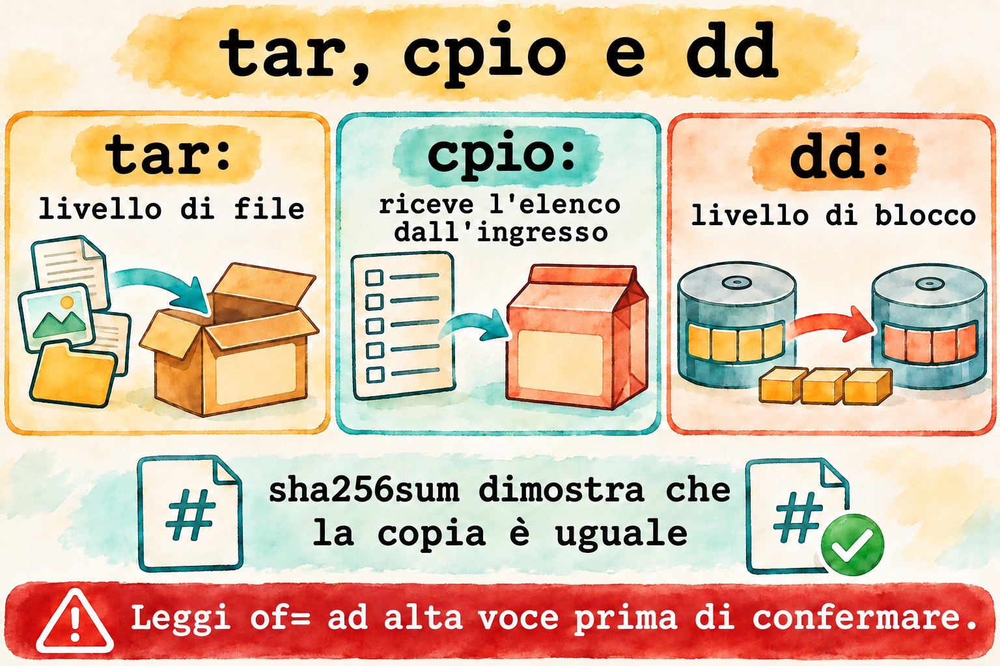
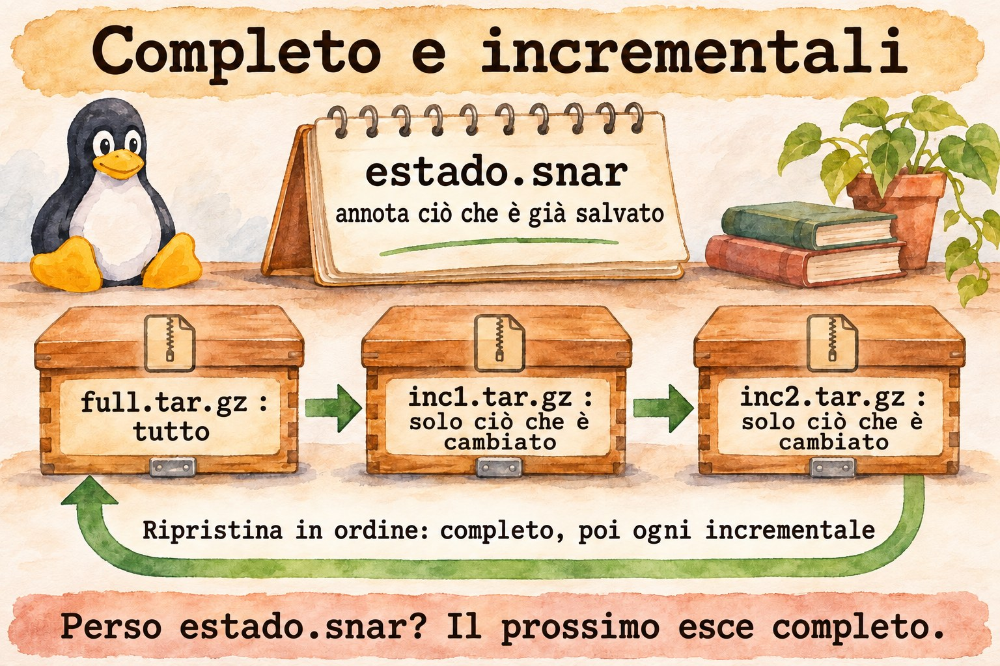
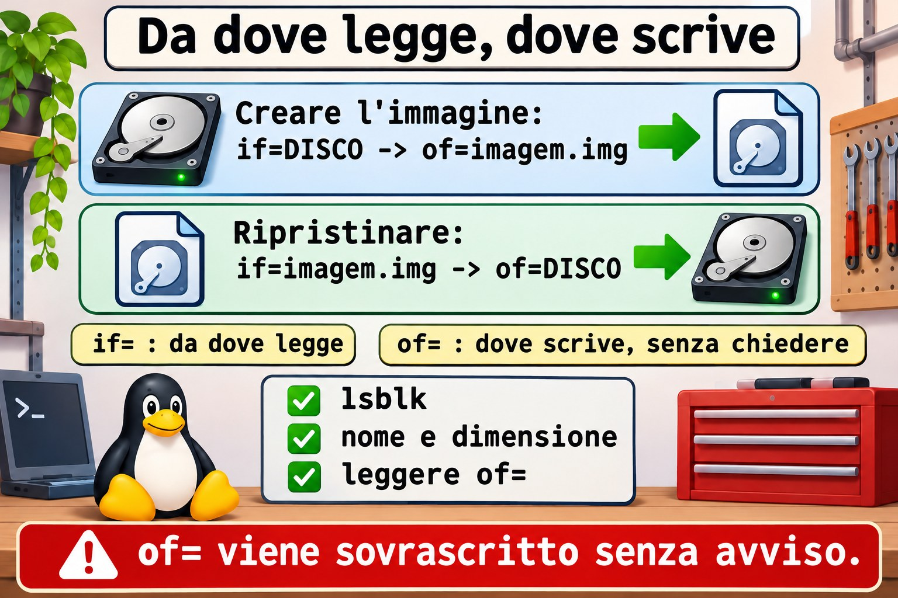

Lezione 8.3 · Archiviazione avanzata
Nella lezione 1.7 hai imparato a creare un tar e a estrarlo. Ora la domanda cambia: cosa entra, cosa resta fuori, cosa preserva i permessi e come dimostrare che la copia è integra. In questa lezione usi anche dd, che copia un intero disco e che, con una lettera sbagliata, cancella un intero disco.
Il cuore di questa lezione: selezionare con
--excludee-T; estrarre dove vuoi con-Ce--strip-components; confrontare contar -d; riconoscerecpio; creare un'immagine di disco condd; dimostrare l'integrità consha256sum. Il resto è approfondimento.
| Scheda | |
|---|---|
| Modulo | M8 · File a fondo, lezione 3 di 5 |
| Quando | Settimana 12 |
| Alla fine | Scegli cosa copiare, preservi ciò che conta e dimostri che la copia è integra |
| Prerequisiti | Lezioni 1.7 e 8.2 |
| Durata | circa 2h |
| Snapshot | m8a3-inicio e m8a3-fim su rocky-lab e debian-lab |
1 · Riscaldamento
Rispondi prima di leggere.
- Cosa significano
ifeofindd? Cosa succede se li scambi? - Un
tar.gzè stato estratto senza errori. Questo garantisce che sia uguale all'originale? tar, per impostazione predefinita, registra ACL e contesto SELinux?
2 · Perché conta
| La richiesta | La risposta sbagliata | Cosa provoca |
|---|---|---|
| "Il backup del sito ha 40 GB di cache" | Comprare più disco | Bastava escludere cache/ |
| "Ho ripristinato e il servizio non parte" | Reinstallare | Mancavano ACL e contesti: il tar predefinito non li registra |
| "Ho clonato il disco con la VM accesa e non fa il boot" | Clonare di nuovo | L'immagine di un disco montato esce inconsistente |
"Ho lanciato dd e il disco è sparito" | Riprovare | if e of invertiti. Solo il backup risolve |
| "La copia è arrivata, ma è strana" | Fidarsi della dimensione | Solo il checksum dimostra l'uguaglianza |
3 · Modello mentale
tarè uno scatolone da trasloco: scegli cosa entra ed etichetti ogni oggetto con proprietario e permessi.cpioè lo stesso scatolone, in cui la lista te la consegna un'altra persona: legge i nomi dallo standard input.ddè una fotocopiatrice di fogli: non sa cosa sia un file, copia blocco per blocco, da un'origine a una destinazione.sha256sumè il sigillo: se cambia un solo bit, il sigillo non corrisponde.
tar nível de arquivo entende nomes, donos, datas escolhe o que entra
cpio nível de arquivo recebe a lista pela entrada find | cpio -o
dd nível de bloco não entende nada, copia tudo disco inteiro
dd if=ORIGEM of=DESTINO bs=4M
in file out file
↑ ↑
só leitura será SOBRESCRITO

dd, leggi of= ad alta voce.Ponte Windows
| In Windows | In Linux | Dove il paragone inganna |
|---|---|---|
7-Zip, Compress-Archive | tar con compressione | tar conserva proprietario, permessi e link |
robocopy /XD /XF | tar --exclude | In tar, la posizione dell'opzione conta |
robocopy /COPYALL | tar --acls --xattrs --selinux | Senza le opzioni, i permessi estesi si perdono |
| Backup di immagine, Clonezilla | dd | dd non sa cosa sia lo spazio libero: copia tutto |
Get-FileHash, certutil -hashfile | sha256sum | Uguale, ma con -c verifica una lista |
4 · L'essenziale
tar: selezione e destinazione
| Voglio... | Forma |
|---|---|
| Escludere | tar -czf x.tar.gz --exclude='cache' --exclude='*.log' pasta |
| Lista di file | tar -czf x.tar.gz -T lista.txt |
| Lista con nomi sicuri | find ... -print0 | tar -czf x.tar.gz --null -T - |
| Entrare in una cartella prima | tar -czf x.tar.gz -C /etc ssh |
| Estrarre altrove | tar -xzf x.tar.gz -C destino |
| Togliere il primo livello | tar -xzf x.tar.gz --strip-components=1 |
| Estrarre solo un elemento | tar -xzf x.tar.gz caminho/arquivo |
| Confrontare con il disco | tar -dzf x.tar.gz |
| Incrementale | tar -czf inc.tar.gz -g estado.snar pasta |
Cosa preservare
| Voglio... | Opzione |
|---|---|
| Permessi in estrazione | -p (predefinito per root) |
| ACL | --acls |
| Attributi estesi | --xattrs |
| Contesto SELinux | --selinux |
| Proprietario numerico | --numeric-owner |
Su Rocky, dopo aver ripristinato in /etc, lancia sudo restorecon -Rv /etc/CAMINHO.
cpio
| Voglio... | Comando |
|---|---|
| Creare | find pasta -print0 | cpio -o0 -H newc > x.cpio |
| Elencare | cpio -tv < x.cpio |
| Estrarre | cpio -idmv < x.cpio |
Lo trovi in due posti: nell'initramfs e dentro i pacchetti RPM.
dd
| Voglio... | Comando |
|---|---|
| Immagine | sudo dd if=DISCO of=imagem.img bs=4M status=progress conv=fsync |
| Ripristinare | sudo dd if=imagem.img of=DISCO bs=4M status=progress conv=fsync |
| Con compressione | sudo dd if=DISCO bs=4M | gzip > imagem.img.gz |
| Sostituire un pezzo di un file | dd ... conv=notrunc |
Sigillo
| Voglio... | Comando |
|---|---|
| Calcolare | sha256sum arquivo > arquivo.sha256 |
| Verificare | sha256sum -c arquivo.sha256 |
Rocky × Debian
| Rocky | Debian | |
|---|---|---|
tar e dd | Uguali | Uguali |
cpio | dnf install cpio | apt install cpio |
| Vedere l'initramfs | lsinitrd | lsinitramfs |
5 · Lab guidato
Passo 0 · Snapshot e preparazione. Su Proxmox: qm snapshot 201 m8a3-inicio e qm snapshot 202 m8a3-inicio. Su rocky-lab:
sudo dnf install -y tar cpio
mkdir -p ~/lab83/site/{html,cache,logs} && cd ~/lab83
echo pagina > site/html/index.html
echo lixo > site/cache/x.tmp
echo acesso > site/logs/acesso.logPasso 1 · Selezionare.
tar -czf sem-cache.tar.gz --exclude='site/cache' --exclude='*.log' site
tar -tzf sem-cache.tar.gz
find site -type f -name '*.html' -print0 > lista.bin
tar -czf so-html.tar.gz --null -T lista.bin
tar -tzf so-html.tar.gzPasso 2 · Estrarre dove vuoi.
mkdir destino
tar -xzf sem-cache.tar.gz -C destino --strip-components=1
find destino--strip-components=1 ha tolto site/ dal percorso.
Passo 3 · Confrontare con il disco.
tar -dzf sem-cache.tar.gz; echo "saida=$?"
echo mudou >> site/html/index.html
tar -dzf sem-cache.tar.gz; echo "saida=$?"La seconda volta compaiono Mod time differs e Size differs, con uscita 1. Serve a rispondere a "cosa è cambiato dal backup".
Passo 4 · Incrementale.
tar -czf full.tar.gz -g estado.snar site
echo nova > site/html/nova.html
tar -czf inc1.tar.gz -g estado.snar site
tar -tzf inc1.tar.gz
mkdir restaura
tar -xzf full.tar.gz -g /dev/null -C restaura
tar -xzf inc1.tar.gz -g /dev/null -C restaura
find restaura -name '*.html'L'incrementale conserva solo ciò che è cambiato. Si ripristina in quest'ordine: il completo, poi ogni incrementale. estado.snar viene modificato a ogni esecuzione: se si perde, il successivo torna a essere completo.


Passo 5 · cpio e initramfs.
find site -print0 | cpio -o0 -H newc > site.cpio
cpio -tv < site.cpio | head -n 5
mkdir viacpio && cd viacpio
cpio -idmv < ../site.cpio
cd ..
sudo lsinitrd /boot/initramfs-$(uname -r).img | head -n 25Il file che il kernel usa al boot è un cpio compresso.
Passo 6 · Un disco di laboratorio. Un file fa la parte del disco, così nulla di reale corre rischi.
truncate -s 64M disco.img
L=$(sudo losetup --find --show disco.img)
echo $L
sudo mkfs.ext4 -q $L
sudo mkdir -p /mnt/lab83
sudo mount $L /mnt/lab83
echo 'dado importante' | sudo tee /mnt/lab83/nota.txt
sudo umount /mnt/lab83Passo 7 · Immagine e sigillo. Con il disco smontato:
sudo dd if=$L of=imagem.img bs=1M status=progress conv=fsync
sudo chown $USER: imagem.img
sudo sha256sum $L imagem.img
sha256sum imagem.img > imagem.sha256
sha256sum -c imagem.sha256I due hash sono uguali.
Passo 8 · Disastro e ritorno. Solo sul disco del lab, verifica che $L sia /dev/loop.
echo $L
sudo dd if=/dev/zero of=$L bs=1M count=8 conv=fsync status=none
sudo mount $L /mnt/lab83
sudo dd if=imagem.img of=$L bs=1M status=progress conv=fsync
sudo mount $L /mnt/lab83
cat /mnt/lab83/nota.txt
sudo umount /mnt/lab83Il primo mount fallisce, perché l'inizio del file system è stato azzerato. Dopo il ripristino, la nota torna.
Passo 9 · debian-lab. Installa cpio e ripeti i passi 1, 2 e 5, sostituendo l'ultimo comando con lsinitramfs /boot/initrd.img-$(uname -r) | head -n 25.
Decidi 1
Mi serve una copia del disco di un server di database in produzione. Come?
A) dd con tutto acceso. B) Backup tramite il meccanismo dell'hypervisor o del database, oppure dd da un sistema in cui il disco non sia montato. C) cp -r /.
Scegli un'opzione prima di continuare.
| Se hai scelto | Risultato | Perché |
|---|---|---|
| A | Immagine inconsistente | I blocchi cambiano mentre dd copia |
| B | Giusto | Su un Proxmox, vzdump e PBS lo fanno. Su bare metal, avvia da un supporto di ripristino |
| C | Sbagliato | Entra in /proc e /sys, e perde link e metadati |
Da ricordare: dd solo con il disco fermo.
Decidi 2
Backup di /etc/ssh su Rocky, da ripristinare poi sulla stessa macchina. Quale comando?
A) tar -czf x.tar.gz /etc/ssh. B) sudo tar --acls --xattrs --selinux -czpf x.tar.gz -C / etc/ssh. C) cp -r /etc/ssh ~/.
Scegli un'opzione prima di continuare.
| Se hai scelto | Risultato | Perché |
|---|---|---|
| A | Incompleto | Senza root non legge nemmeno le chiavi, e non conserva SELinux |
| B | Giusto | Preserva tutto, con percorso relativo. Poi, restorecon |
| C | Pessimo | Perde proprietario, permessi e contesto |
Da ricordare: sappi cosa il tuo backup non conserva.
6 · Rompi e ripara
Guasto 1 · L'exclude che non ha escluso
cd ~/lab83
tar -czf errado.tar.gz site --exclude='*.log'
tar -tzf errado.tar.gz | grep logSintomo: acesso.log è dentro, e tar avvisa di opzioni usate dopo i nomi.
Diagnosi: --exclude vale per ciò che viene dopo.
Riparazione: mettilo prima del percorso, come nel Passo 1. Controlla sempre con tar -t.
Guasto 2 · Il dd che ha accorciato il file
cp imagem.img copia.img
ls -l copia.img
dd if=/dev/zero of=copia.img bs=1 count=1 seek=1000
ls -l copia.img
sha256sum imagem.img copia.imgSintomo: il file è rimasto con 1001 byte.
Diagnosi: per impostazione predefinita, dd tronca la destinazione quando è un file.
Riparazione: ripristina la copia e usa conv=notrunc:
cp imagem.img copia.img
printf 'X' | dd of=copia.img bs=1 seek=1000 conv=notrunc status=none
ls -l copia.img
sha256sum imagem.img copia.imgLa dimensione resta invariata, e l'hash è cambiato per un solo byte.


Guasto 3 · if e of scambiati (racconto)
Una notte, per salvare il disco, qualcuno digita dd if=/backup/imagem.img of=/dev/sda, convinto di stare creando l'immagine.
Sintomo: il sistema comincia a dare errori, e non parte più nulla.
Diagnosi: origine e destinazione erano invertite, e /dev/sda è stato sovrascritto.
Riparazione: non esiste un comando che lo annulli. Solo il ripristino di un backup o di uno snapshot. Prima di lanciare: lsblk, controllare nome e dimensione, e leggere of=.
Pulizia
cd ~
sudo losetup -j ~/lab83/disco.img
sudo losetup -d "$(sudo losetup -j ~/lab83/disco.img | cut -d: -f1)"
sudo rmdir /mnt/lab83
rm -r ~/lab837 · Trappole
| Trappola | Cosa succede | Come evitarla |
|---|---|---|
--exclude dopo il percorso | Non esclude | Prima del percorso |
Percorso assoluto in tar | tar toglie la /, ed estrae in relativo | Usa -C / in creazione |
Backup senza --acls e --selinux | Ripristina senza metadati | Includi le opzioni |
Perdere il .snar | L'incrementale diventa completo | Conservalo insieme al backup |
dd su disco montato | Immagine inconsistente | Smonta o usa uno snapshot |
Confondere /dev/sda e /dev/sdb | Cancella il disco sbagliato | lsblk prima |
dd su file senza notrunc | Tronca il file | conv=notrunc |
bs piccolo su disco grande | Lentissimo | bs=4M |
| Fidarsi della dimensione | Non dimostra nulla | sha256sum -c |
8 · Quiz
Rispondi senza guardare. Le soluzioni sono alla fine della lezione.
- Perché
--excludedopo il percorso non funziona? - Cosa fa
--strip-components=1? - In che ordine si ripristina un backup incrementale di
tar? - Come elencare un
cpio? - Perché non usare
ddsu un disco montato? - Come dimostrare che l'immagine è uguale all'origine?
9 · Promemoria
Da sapere a memoria:
| Voglio... | Comando |
|---|---|
| Escludere | tar -czf x.tar.gz --exclude='PADRAO' pasta |
| Elencare | tar -tzf x.tar.gz |
| Estrarre altrove | tar -xzf x.tar.gz -C destino |
| Confrontare | tar -dzf x.tar.gz |
| Immagine | sudo dd if=ORIGEM of=imagem.img bs=4M status=progress conv=fsync |
| Sigillo | sha256sum -c arquivo.sha256 |
Da consultare:
| Voglio... | Comando |
|---|---|
| Preservare tutto | --acls --xattrs --selinux -p |
| Incrementale | -g estado.snar |
| Lista sicura | find ... -print0 | tar --null -T - -czf x.tar.gz |
| cpio | cpio -o0 -H newc, cpio -tv, cpio -idmv |
| Initramfs | lsinitrd, lsinitramfs |
| Dispositivo da file | losetup --find --show, losetup -d |
Flashcard:
of=→ la destinazione, sovrascritta senza chiedere.tar,cpio,dd→ file, lista e blocco.conv=notrunc→ non tronca la destinazione.- Backup senza
--selinux→ contesti persi. - Prova di uguaglianza → hash.
10 · Checklist e chiusura
- [ ] Escludo da
tare confermo con-t - [ ] Estraggo nella destinazione e tolgo i livelli
- [ ] Faccio backup completo e incrementale
- [ ] So cosa
tarnon registra per impostazione predefinita - [ ] Elenco ed estraggo un
cpio - [ ] Faccio un'immagine e ripristino con
ddsu un disco di lab - [ ] Dimostro l'uguaglianza con l'hash
Ultimo esercizio, senza guardare la lezione: su debian-lab, genera un tar.gz di /etc/ssh senza le chiavi private (ssh_host_*_key), elenca il contenuto per dimostrarlo e crea il file .sha256 corrispondente.
Snapshot di fine (su Proxmox):
qm snapshot 201 m8a3-fim
qm snapshot 202 m8a3-fim11 · Nella vita reale
Missione, sola lettura. Su un server Linux che amministri (o con autorizzazione), lancia solo:
lsblk -o NAME,SIZE,TYPE,MOUNTPOINTS
sudo find / -xdev -type f \( -name '*.tar.gz' -o -name '*.tgz' -o -name '*.img' \) -size +100M -lsSu un file tar trovato, elenca senza estrarre:
tar -tzf ARQUIVO | head -n 20
tar -tzvf ARQUIVO | tail -n 3Domande a cui rispondere:
- Qual è il disco di sistema? Quale sarebbe l'
of=sbagliato? - Esiste un'immagine o un backup senza documentazione?
- Quel file è mai stato testato?
Diario: annota chi è il responsabile di quel backup e quando è stato testato.
Domani, senza guardare: scrivi il comando dd per creare un'immagine di /dev/sdb, e di' cosa devi controllare prima.
12 · Approfondire quando vuoi
rpm2cpio pacote.rpm | cpio -idmv: estrarre i file di un pacchetto senza installarlo.ddrescue: copiare un disco difettoso, tollerando gli errori.fsarchiver,partclone: copiano solo i blocchi in uso.resticeborg: deduplicazione e cifratura; NS8 usaresticnei backup.zstdintar:tar --zstd -cf, opzione veloce e molto compatta.
DeepTutor (http://10.1.0.149:3782, KB "Curso Linux Sysadmin"):
!explica a diferença entre tar, cpio e dd!feynman por que dd em disco montado gera imagem inconsistente!quiz Aula 8.3, 5 perguntas sobre arquivamento
Soluzioni commentate
Riscaldamento
ifè l'origine eofè la destinazione. Se li scambi,ddsovrascrive l'origine, senza chiedere.- No. Solo un hash confrontato con l'originale dimostra l'uguaglianza.
- No. Bisogna chiederlo con
--aclse--selinux, e in molti casi con--xattrs.
Quiz
- Perché, in creazione, quelle opzioni valgono per i nomi che vengono dopo di esse.
- Rimuove il primo livello dei percorsi in estrazione.
- Prima il completo, poi ogni incrementale, nell'ordine in cui sono stati creati.
cpio -tv < arquivo.cpio.- Perché i blocchi cambiano durante la copia, e l'immagine risulta in uno stato che non è mai esistito.
- Con l'
sha256sumdell'origine e dell'immagine, con il disco senza scritture.